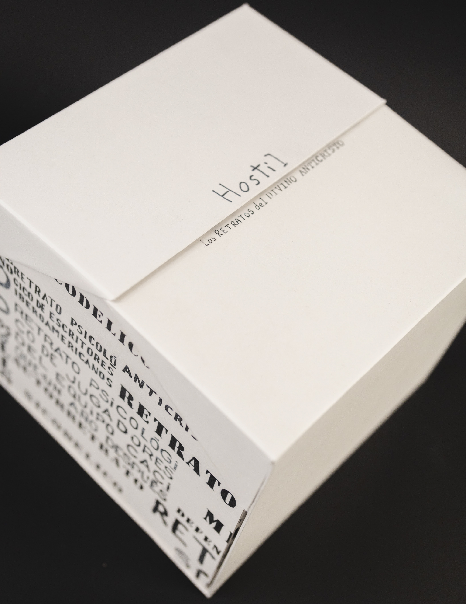
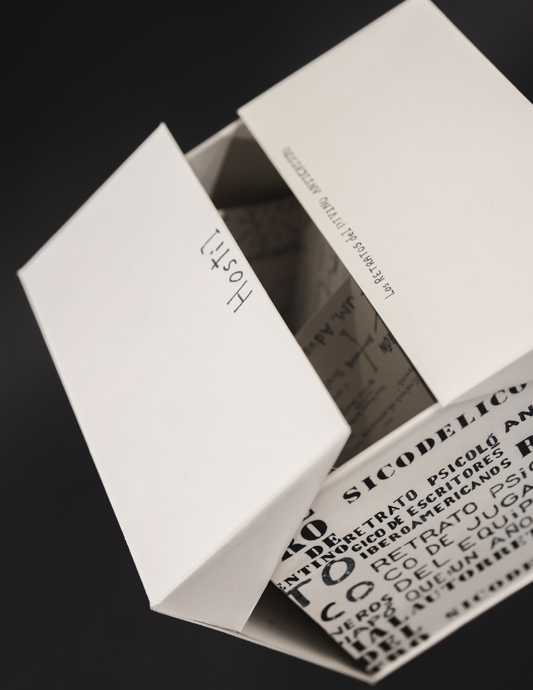
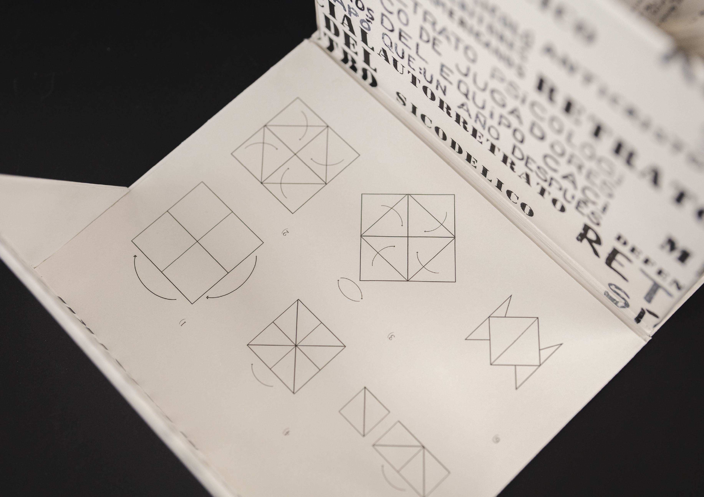
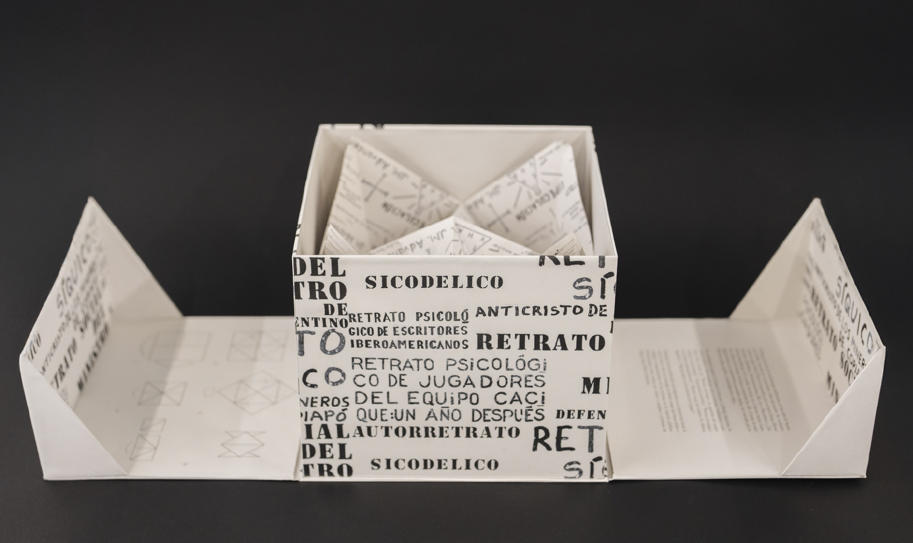
Edición conceptual basada en el trastorno de oposición desafiante, tras investigación se llevo a conceptos que guiaron el proyecto a la arquitectura hostil, y con esto al divino anticristo, que fue un escritor que vivía en las calles del barrio lastarria (Chile), en sus escritos mostraba su mirada crítica sobre el mundo. En este proyecto se crearon 5 ediciones que contienen 5 retratos escritos por el divino anticristo, conservando su caligrafía y estética.
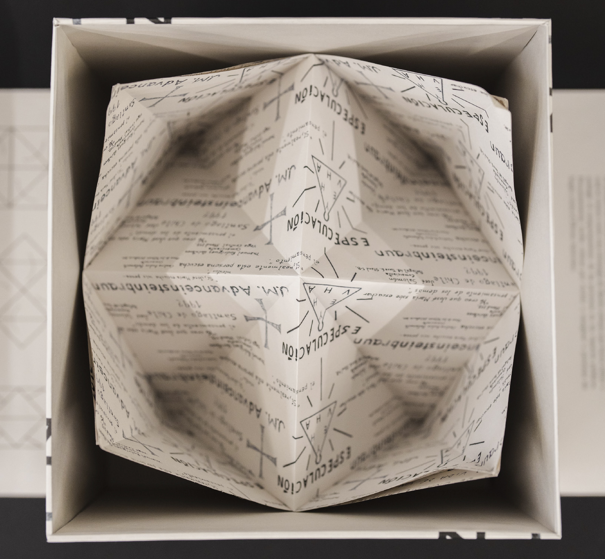
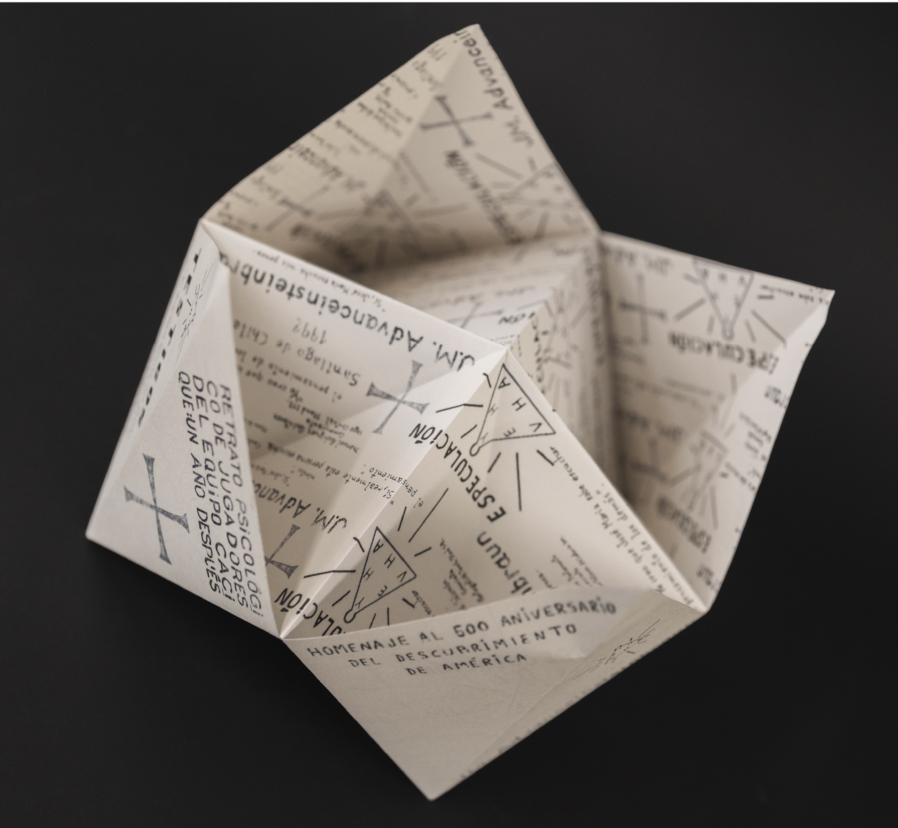
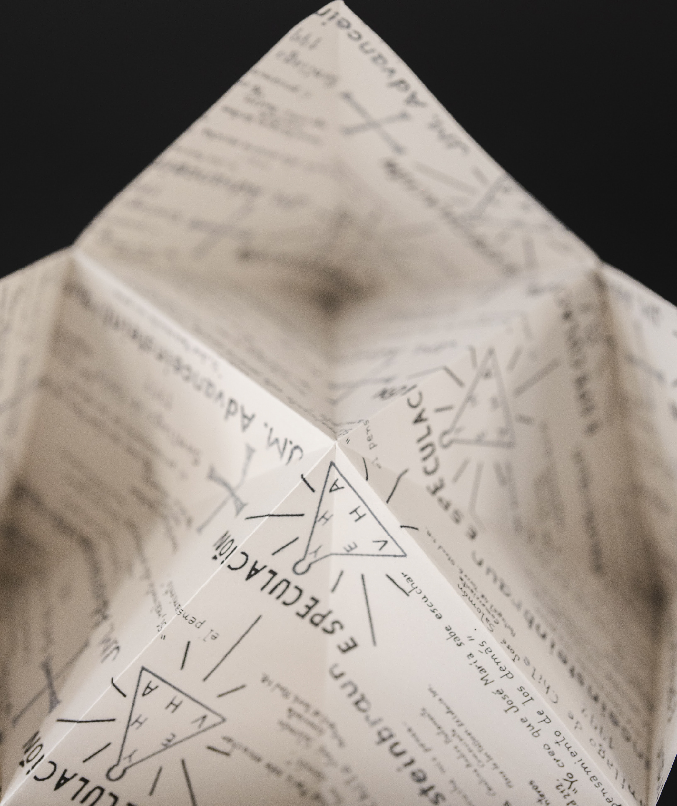
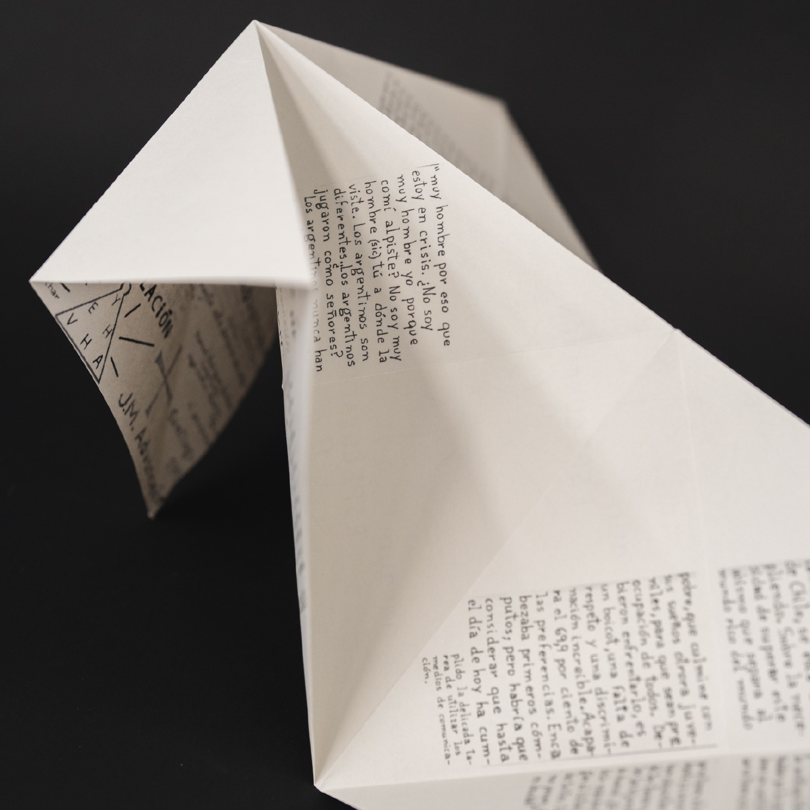
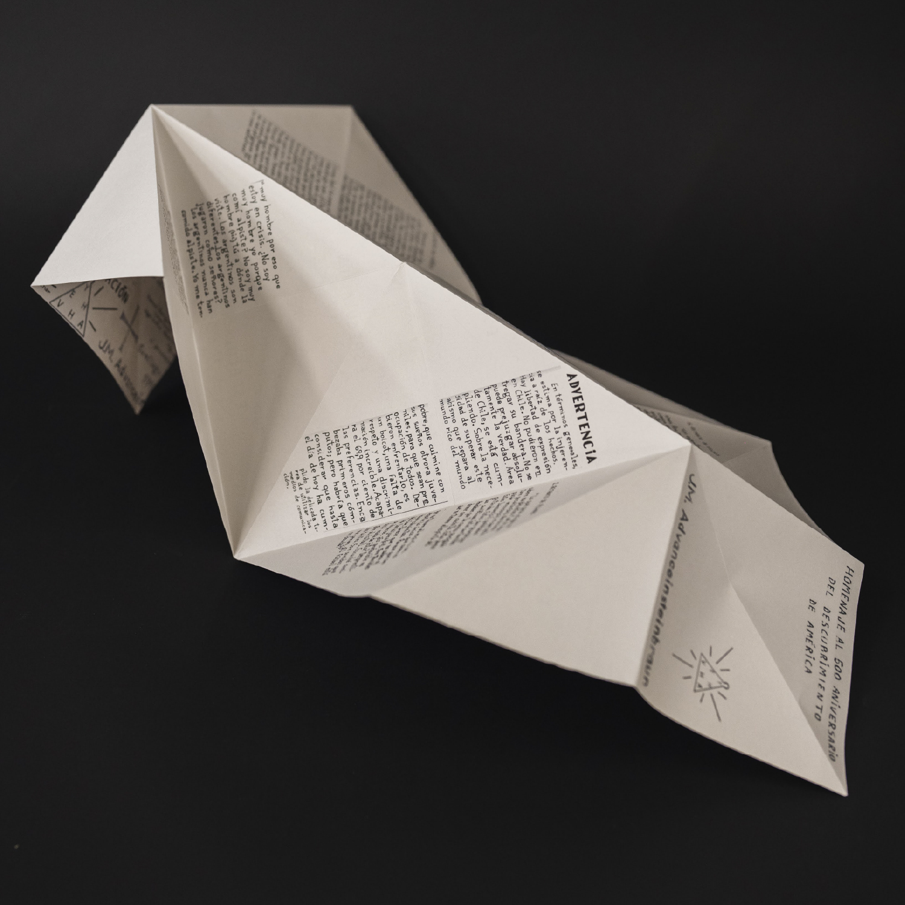
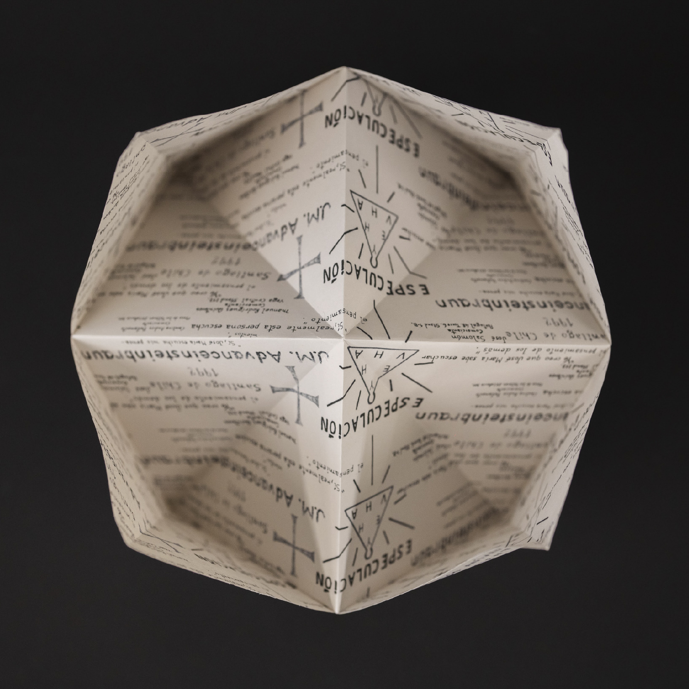
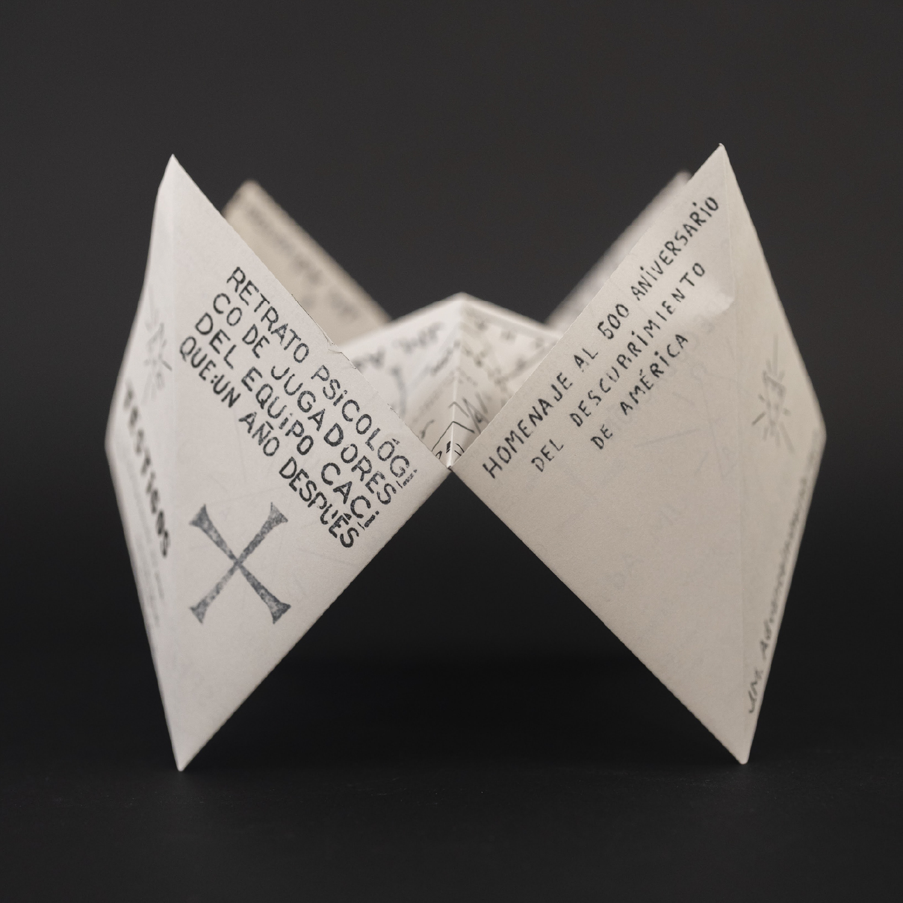